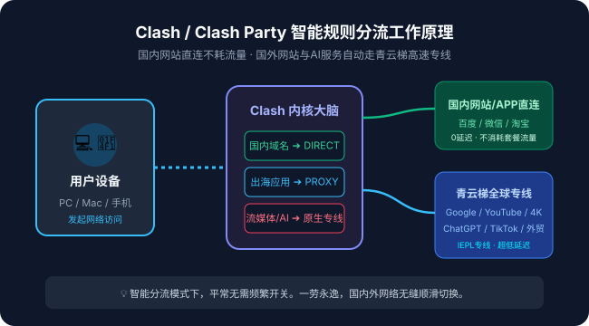

随着网络安全环境的发展，老旧的代理客户端如 Clash for Windows 早已停滞更新，许多新手用户在寻找一款界面清爽、兼容性强、且能完美支持青云梯官网高速专线节点的现代客户端。Clash Party 凭借其赏心悦目的 UI 界面、原生的 Meta 内核支持以及对 Windows / macOS 系统的出色适配，成为了 2026 年最受好评的 Clash 机场图形化工具之一。
本文将以图文结合的形式，手把手带领中文新手完成 Clash Party 的下载安装、配置导入、分流模式切换以及高级排障技巧，助你在 3 分钟内轻松搭建畅通稳定的科学上网出海环境。
一、为什么 2026 年推荐优先使用 Clash Party？
过去很多用户习惯使用 Clash for Windows，但随着原作者删库，CFW 的内核版本已经严重滞后，无法解析新一代的 VLESS Reality、Hysteria 2 以及 WireGuard 协议节点。而 Clash Party 专为现代网络协议打造，具备以下不可替代的核心优势：
- 搭载最新一代 Mihomo (Meta) 内核：全面支持目前市面上所有的主流加密传输协议，不论是青云梯全内网 IEPL 专线还是防封锁混淆节点，均能毫秒级握手。
- 极低资源占用：相比基于庞大 Electron 框架的老软件，Clash Party 进行了深度性能剪裁，后台待机内存占用仅 50MB~80MB，极度省电且不影响游戏帧率。
- 原生一键导入协议集成：完美兼容各大机场推荐服务商的
clash-party://install-config深度链接，在青云梯官网后台点击按钮即可自动载入，无需手动复制复杂的长 URL。 - 更强大的内置分流规则：预设了国内外常用域名黑白名单，智能区分国内应用与海外媒体，彻底防止访问淘宝、微信或网银时产生代理绕路。
客户端只是本地流量调度的“方向盘”，而网络质量的关键在于背后节点服务器的硬件素质。想要告别晚高峰转圈，建议配合采用青云梯官网（qingyuntijic.mom）的万兆 IEPL 内网专线，物理骨干直连，才能真正激发 Clash Party 的满血性能。
二、Clash Party 下载与安装实操步骤
第 1 步：获取最新官方安全安装包
由于网络安全环境复杂，请切勿在不知名的第三方网盘或破解网站下载可执行程序，以免遭遇被植入后门勒索病毒的风险。
- 登录 青云梯控制台。
- 在控制台左侧菜单点击【下载与教程】，选择【Clash Party 客户端】。系统会提供经过青云梯官方安全校验的 Windows (.exe) 及 macOS (.dmg) 安装包。
- 下载完成后，双击运行安装程序。Windows 11 用户若触发 SmartScreen 筛选器提示“已保护你的电脑”，请点击【更多信息】 -> 【仍要运行】。
第 2 步：首次启动与基础权限配置
软件安装完成后打开主界面。如果系统弹出“Windows Defender 防火墙已阻止此应用的部分功能”，请务必勾选【专用网络】与【公用网络】，并点击【允许访问】。只有授予了本地回环监听权限，软件才能正常接管浏览器和应用软件的网络流量。
三、一键导入青云梯高速订阅
获取订阅是科学上网最关键的一环。在青云梯官网开通会员套餐后，可以通过以下两种方式将稳定节点同步到 Clash Party 中：
| 导入方式 | 操作便捷度 | 适用场景 | 推荐指数 |
|---|---|---|---|
| 一键唤醒导入 | ⭐⭐⭐⭐⭐ 极简 (1秒完成) | 本机已安装好 Clash Party 客户端 | 强烈推荐 |
| 手动复制 URL 导入 | ⭐⭐⭐⭐ 容易 | 浏览器跨设备、或一键协议被安全软件阻断 | 备用推荐 |
方法 A：一键唤醒导入（推荐）
保持 Clash Party 在后台运行，回到青云梯官网后台首页的【订阅管理】区域，直接点击【一键导入到 Clash Party】。浏览器会弹出“是否打开 Clash Party？”的提示框，点击【打开】。此时客户端会自动弹出下载窗口，并在 2 秒内完成节点列表的同步。
方法 B：手动复制 URL 导入
如果浏览器未能自动拉起客户端，您只需在青云梯后台点击【复制 Clash 订阅链接】。然后打开 Clash Party，点击左侧菜单栏的【配置 (Profiles)】，在顶部的输入框中粘贴刚才复制的 URL，最后点击右侧的【下载 / Download】按钮即可。

四、核心分流模式详解：规则、全局与直连怎么选？
许多新手在使用魔法梯子时，常常遇到“用了代理之后国内网银打不开”或者“下载国内文件把机场流量跑光了”的困境，其根源在于没有搞清楚 Clash 的运行模式。在 Clash Party 主界面下方，主要有三种模式可供选择：
1. 规则模式 (Rule) —— 推荐 99% 的场景日常常开
规则模式是 Clash 系列的灵魂所在。在规则模式下，软件会根据访问的目标域名与 IP 进行智能判断：
- 访问
baidu.com、taobao.com、bilibili.com等国内服务时：自动命中 DIRECT 直连，不消耗青云梯任何套餐流量，网速与平日完全一致。 - 访问
google.com、youtube.com、github.com等海外网站时：自动调度青云梯的海外优质专线，实现超高速无缝出海。 - 访问
openai.com或netflix.com时：自动路由至专属的 AI 原生住宅节点或流媒体解锁节点。
2. 全局模式 (Global)
所有网络请求（无论国内还是国外）全部强制通过代理节点转发。此模式通常用于排查某些冷门小众海外网站的分流误判，或者测试节点本身的出口原生 IP。不建议日常一直开启，否则会白白浪费宝贵的高速专线流量。
3. 直连模式 (Direct)
所有请求都不走代理，直接通过您本地的宽带网络直连。相当于暂时停用了梯子功能。
五、开启系统代理与节点测速选择
- 在左侧导航栏点击【代理 (Proxies)】，在展开的策略组中找到【节点选择】。
- 点击右上角的测速小图标（Wi-Fi 波浪图标），软件会自动并发向延迟测试服务器发送探测请求。
- 在列表中挑选延迟较低且标注有绿色数值的节点（例如：
🇭🇰 香港 IEPL 01 [12ms]或🇯🇵 日本 BGP [35ms]）。 - 返回软件首页，找到并开启【系统代理 (System Proxy)】主开关。此时托盘图标变为亮色，打开浏览器访问 YouTube 或 Google 即可瞬间秒开！
六、常见使用报错与快速排查秘籍
1. 测速全部显示 Timeout（超时或全红）
这是 80% 的新手都会遇到的现象，通常绝非机场服务器跑路，而是以下本地原因导致：
- 本地系统时间不准：现代科学上网加密协议（如 TLS、Trojan）严格依赖时间戳同步。若本地时间快或慢超过 60 秒，服务端将直接拒绝握手。解决方法：在 Windows 设置中搜索【时间和语言】，点击【立即同步】即可。
- 订阅已过期或流量耗尽：请登录青云梯官网后台确认您的套餐剩余有效天数及剩余流量。
- 端口冲突：如果电脑上同时运行了其他代理工具（如 v2rayN、Watt Toolkit、Steam 社区加速器），可能造成 7890 端口冲突。请彻底退出其他软件后再重启 Clash Party。
2. 网页能打开，但终端命令行或部分海外游戏不走代理
系统代理仅对支持系统 HTTP 代理规范的软件有效（如 Chrome、Edge、Firefox）。如果是某些命令行工具（git/pip/npm）或海外在线联机游戏，请在 Clash Party 的【设置】中开启【TUN 虚拟网卡模式】。TUN 模式会在系统底层虚拟一张网卡，强制接管整机所有 UDP/TCP 数据包，完美实现全应用无死角加速。
📚 相关进阶教程推荐
❓ 关于 Clash Party 使用的常见问题 (FAQ)
Clash Party 采用更加轻量高效的现代前端框架重构，底层搭载新一代 Mihomo (Clash Meta) 内核，具备极低的系统内存占用（仅约 60MB），且原生支持 TUN 虚拟网卡模式与一键唤醒导入协议，彻底告别旧版 CFW 停止维护带来的安全漏洞隐患。
请依次检查：1. 是否开启了【系统代理 (System Proxy)】总开关；2. 本地电脑时间是否与北京时间同步（误差不能超过 60 秒）；3. 节点列表中选中的节点是否有效，可点击右下角 Wi-Fi 图标进行测速并选择绿色低延迟节点。
不会。Clash Party 内置了庞大且精准的 GeoIP 规则分流库。在【规则模式】下，访问国内常见网站（如百度、淘宝、微信）会自动命中 DIRECT 直连规则，不通过青云梯海外节点转发，零延迟且完全不耗费套餐流量。